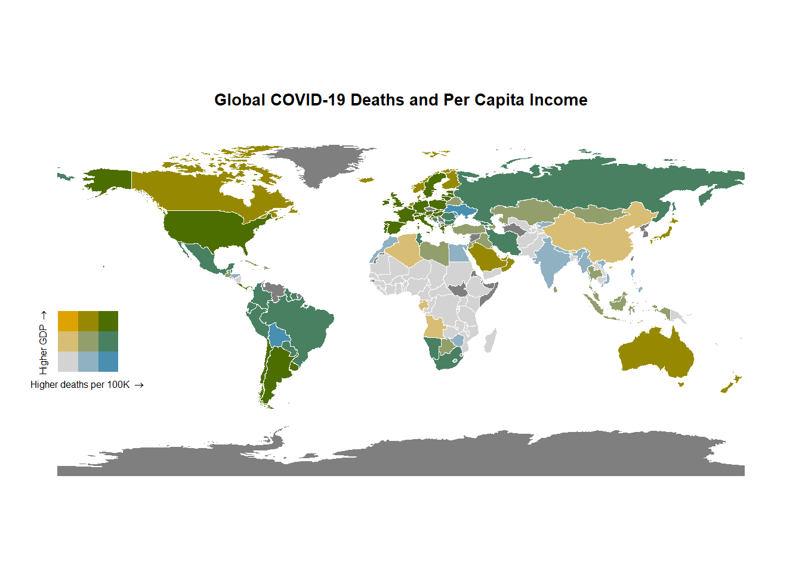

── Attaching packages ─────────────────────────────────────── tidyverse 1.3.2 ──
✔ ggplot2 3.3.6 ✔ purrr 0.3.4
✔ tibble 3.1.8 ✔ dplyr 1.0.10
✔ tidyr 1.2.1 ✔ stringr 1.4.1
✔ readr 2.1.3 ✔ forcats 0.5.2
── Conflicts ────────────────────────────────────────── tidyverse_conflicts() ──
✖ dplyr::filter() masks stats::filter()
✖ dplyr::lag() masks stats::lag()
Loading required package: maps
Attaching package: 'maps'
The following object is masked from 'package:purrr':
map
Loading required package: sp
### Welcome to rworldmap ###
For a short introduction type : vignette('rworldmap')
Linking to GEOS 3.9.1, GDAL 3.4.3, PROJ 7.2.1; sf_use_s2() is TRUE
rgeos version: 0.5-9, (SVN revision 684)
GEOS runtime version: 3.9.1-CAPI-1.14.2
Please note that rgeos will be retired by the end of 2023,
plan transition to sf functions using GEOS at your earliest convenience.
GEOS using OverlayNG
Linking to sp version: 1.5-0
Polygon checking: TRUE
Attaching package: 'plotly'
The following object is masked from 'package:ggplot2':
last_plot
The following object is masked from 'package:stats':
filter
The following object is masked from 'package:graphics':
layoutSTAA566_schaefer_maps
Import libraries
Import data
gdp <- read_csv("C:\\Users\\pscha\\Documents\\_School\\2022_Fall_Classes\\STAA_566_DataViz\\maps-pschaeferdc\\2017_gdp.csv", show_col_types = FALSE)
covid <- read_csv("C:\\Users\\pscha\\Documents\\_School\\2022_Fall_Classes\\STAA_566_DataViz\\maps-pschaeferdc\\covid_per_capita.csv",show_col_types = FALSE)Draw map
world_sf <- st_as_sf(getMap(resolution = "low"))%>%
#mutate(region = str_to_title(region))%>%
left_join(covid,by = c("GEOUNIT" = "country"))%>%
left_join(gdp,by = c("GEOUNIT" = "country"))
bidata <- bi_class(world_sf, x = death_100k, y = gdp_nom_percap, style = "quantile", dim = 3)Warning in classInt::classIntervals(.data[[var]], n = dim, style = style): var
has missing values, omitted in finding classes
Warning in classInt::classIntervals(.data[[var]], n = dim, style = style): var
has missing values, omitted in finding classes#make map
map <- ggplot() +
geom_sf(data = bidata, mapping = aes(fill = bi_class), color = "white", size = 0.1, show.legend = FALSE) +
bi_scale_fill(pal = "BlueGold", dim = 3) +
ggtitle("Global COVID-19 Deaths and Per Capita Income")+
bi_theme()
map <- map + theme(plot.title = element_text(size = 10))
# make legend
legend <- bi_legend(pal = "BlueGold",
dim = 3,
xlab = "Higher deaths per 100K ",
ylab = "Higher GDP ",
size = 6)
legend <- legend+theme(legend.text=element_text(size=20)) #change font size of legend text
# map and legend
finalPlot <- ggdraw() +
draw_plot(map, 0, 0, 1, 1) +
draw_plot(legend, 0.0, .3, 0.2, 0.2)
finalPlot
I made this map to see what the relationship between per capita income and COVID-19 deaths per 100,000 persons would look like. I expected to generally see a lot of countries with either high GDP and low deaths per 100K, or low income and high deaths per 100K. My assumption was that lower GDP would result in poorer public health infrastructure to prevent disease spread and treat disease once an individual became sick. What I actually saw were more countries than I expected that have low income and low death rates (mostly in Africa), as well as high income countries (the US and Western Europe, especially) with high death rates.
Designing the map presented some challenges. I initially planned to use two polygon layers of different colors with the ‘alpha’ levels adjusted to give different color combinations based on the combinations of GDP and covid deaths. However, I had trouble setting the polygons to different colors. Using two polygon sets of the same color to get a single combined color ramp didn’t work either because the combinations were almost indistinguishable. I found the biscale package, and borrowed heavily from the code examples at https://cran.r-project.org/web/packages/biscale/vignettes/biscale.html to make my map work. The biscale package has a number of pre-built color combinations, and I experimented with those until I found a color combinaiton (blue-gold) that I thought provided the best contrast between the nine combinaitons. I picked my projection based on
For a worldwide dataset, the spatial units are countries. The data source for the per capita data was as of 2017, from the ‘worldometer’ website: https://www.worldometers.info/gdp/gdp-per-capita/. The COVID deaths per 100k persons was as of 4 Oct 2022, from the Johns Hopkins Coronavirus Resource Center: https://coronavirus.jhu.edu/data/mortality